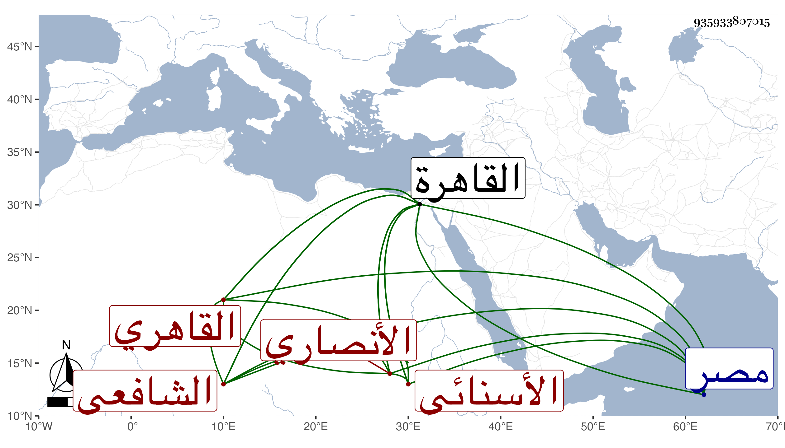

0902Sakhawi.DawLamic.ITO20230111-ara1.EIS1600.935933807015
Biography ID: 935933807015
890
عبد اللطيف بن أحمد بن عمر التقي أبو محمد بن الشمس أبي العباس ابن التقي أبي جعفر الأنصاري الأسنائي ثم القاهري الشافعي ابن أخت الجمال الأسنائي . اشتغل عليه قليلا وناب عنه في الحسبة وعن غيره فيها وفي الحكم بالقاهرة ومصر وأعمال الأطفيحية ، وقد سمع علي الميدومي والمحب الخلاطي وغيرهما ، وحدث باليسير أخذ عنه الولي العراقي وغيره ممن لقيناه كالصدر محمد بن عبد الكافي السويفي فإنه سمع عليه سنن الدارقطني وأجاز لكل من الجلال القمصي والشمس ابن الحفار في عرضه عليه وكان مشكورا في الأحكام . مات في ربيع الآخر سنة ثلاث وقد جاز الستين ، ذكره شيخنا في الأنباء قال ولم آخذ عنه شيئا وسمي جده عليا وهو سهو ، وأرخه غيره كالمقريزي في عقوده في يوم السبت ثالث رجب بالقاهرة وكأنه أضبط .
